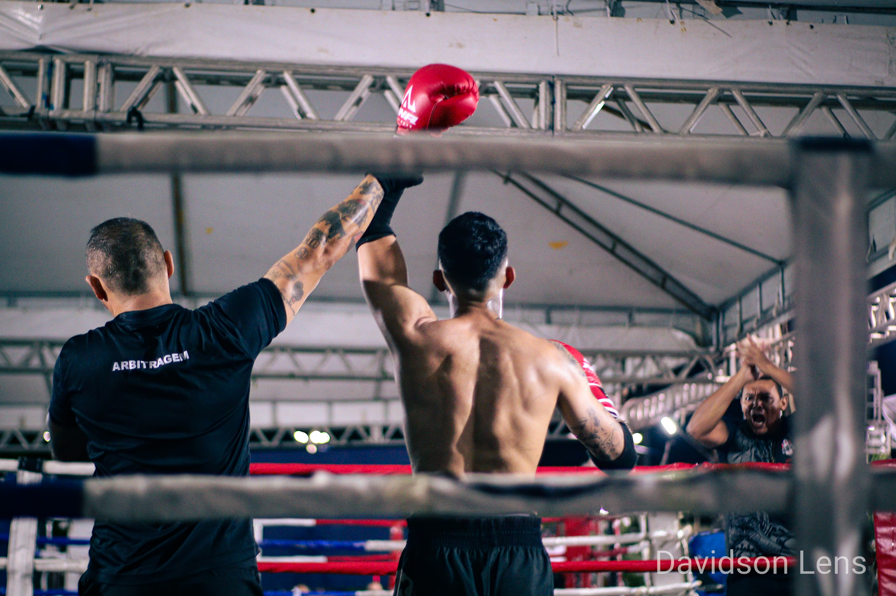

Observar
Entender a pessoa, o ambiente e aquilo que precisa ser contado.

Samuel Davidson
Retratos, eventos e histórias transformadas em imagem — com presença, direção e intenção.
Não é só registrar.
Cada trabalho nasce da combinação entre técnica e sensibilidade. A câmera registra o que acontece; o olhar decide o que merece permanecer.
Uma seleção de projetos em que luz, movimento e pessoas conduzem a narrativa.
Arraste, role ou passe o mouse. A galeria foi pensada para ser explorada, não apenas percorrida.





Direção, enquadramento, luz e timing fazem parte da imagem final. O resultado começa muito antes do disparo.
Entender a pessoa, o ambiente e aquilo que precisa ser contado.
Construir o enquadramento sem tirar a naturalidade do momento.
Esperar a fração de segundo em que tudo encontra seu lugar.
Sou Samuel Davidson, fotógrafo com atuação em ensaios, eventos, congressos, espetáculos e projetos audiovisuais. Meu trabalho procura unir técnica, direção e sensibilidade para transformar cenas reais em imagens que continuam falando depois do evento.
Vamos conversar sobre o próximo ensaio, evento ou projeto.
Falar no WhatsApp ↗